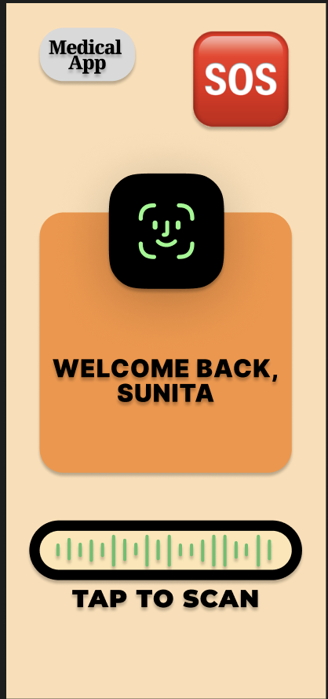
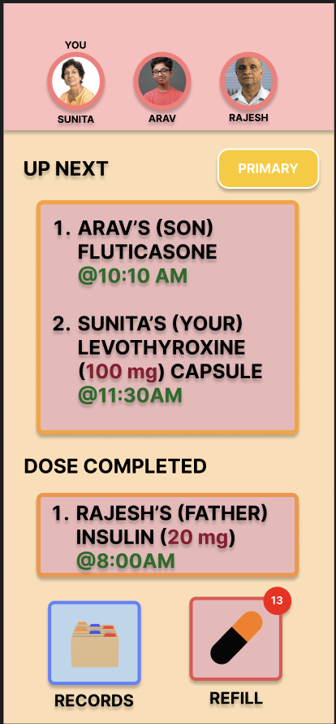
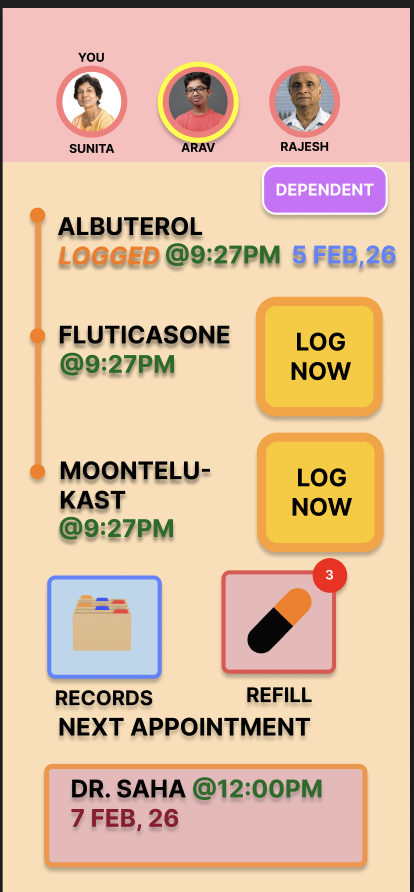
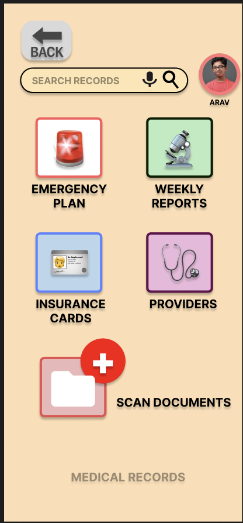
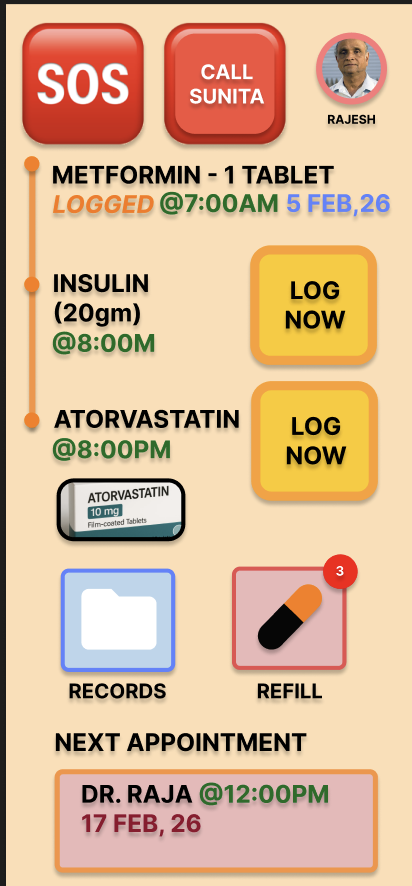
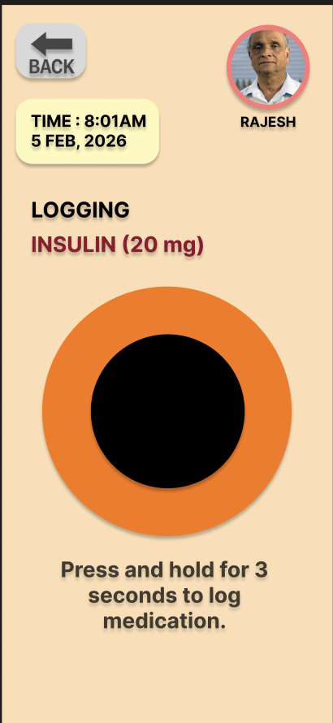
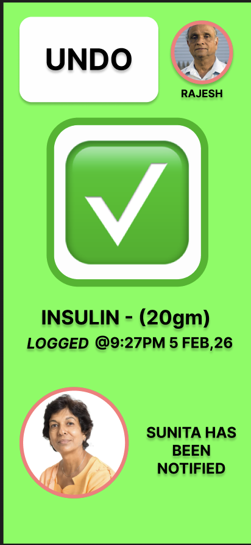
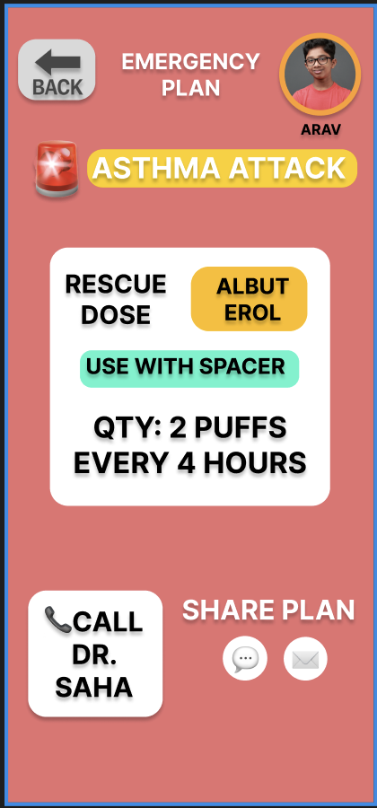

Final Prototype
The refined, interactive 8-screen solution for Sunita and Rajesh.
✨ Final Iteration
The screens displayed below represent the Final Design (Iteration 2), refined after user feedback. I have prioritized accessibility, thumb-zone reachability, and hardware compatibility.
Original iteration can be found here: View Initial Iterations & Usability Test Results →
Interactive Experience
For the full experience with transitions and the 3-second logging hold, you can interact with the live embed below or launch it in a new window.
Note: Detailed user feedback and initial design iterations are documented in Section 08: Usability Testing.
System Walkthrough
Documenting the final interface design and functional improvements.

01 Login Gateway
Biometric Access
Features a custom FaceID icon and an audio-visual scanner bar. The layout has been lowered to ensure visibility beneath the hardware notch.

02 Family Dashboard
Centralized Household Care
Displays a prioritized "Up Next" list for all family members. Uses floating white cards with soft shadows to create depth and hierarchy.

03 Dependent View
Arav's Medication Schedule
Timeline-based view of doses. "Log Now" buttons are high-contrast orange to stand out from the peach background.

04 Medical Vault
The Records Hub
Tiled navigation for emergency plans and insurance. Features a prominent "Scan Documents" floating action button (FAB) for rapid data entry.

05 Senior Dashboard
Assisted Independence
A simplified version of the dashboard for Rajesh, focusing on large text and a direct "Call Sunita" button for immediate safety.

06 Tactile Logger
Intentional Interaction
The 3-second "Press and Hold" circle prevents accidental logging. Includes the new "Back" button for improved navigation control.

07 Success State
Peace of Mind
High-visibility green success screen. Features the enlarged 48px "Undo" button and a notification avatar showing Sunita has been alerted.

08 Crisis Hub
The Emergency Plan
A high-stress UI designed for speed. Includes dosage quantities, rescue instructions, and a "Share Plan" feature for ER staff.